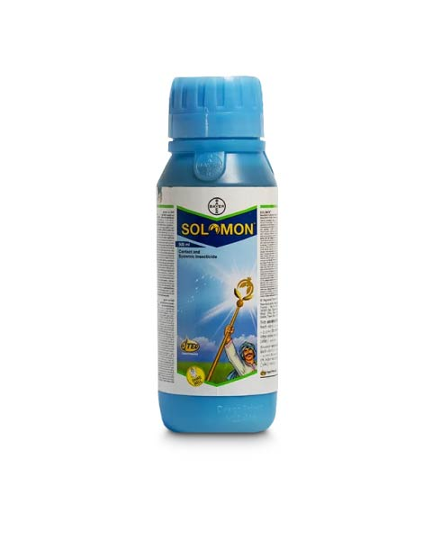
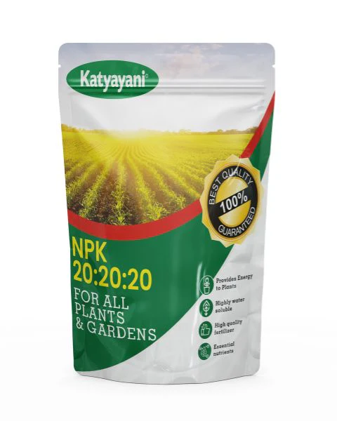

Turmeric Cultivation
Curcuma longa - A spice with medicinal properties
Turmeric Life Cycle
Planting
0-1 month
Sprouting
1-2 months
Vegetative
2-5 months
Rhizome Dev.
5-7 months
Harvesting
8-9 months
Common Problems & Solutions
Rhizome Rot
Fungal disease causing rotting of rhizomes, wilting, and yellowing of leaves.
Leaf Blotch
Fungal disease causing yellow-brown spots on leaves.
Shoot Borer
Insect pest that bores into pseudostems causing wilting.
Recommended Products

Solomon
Protects against rhizome rot and fungal diseases

Pegasus
Organic solution for shoot borer management

KatanayaNPK
Special fertilizer for higher rhizome yield